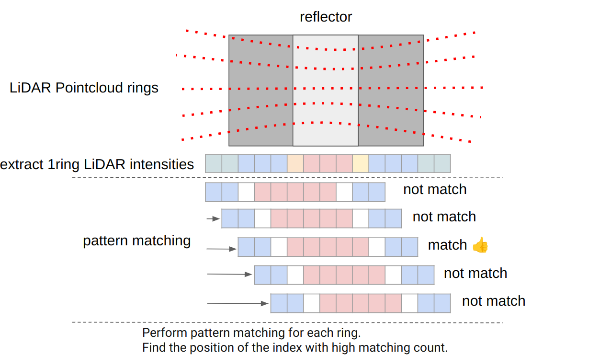

LiDAR Marker Localizer#
LiDARMarkerLocalizer is a detect-reflector-based localization node .
Inputs / Outputs#
lidar_marker_localizer node#
Input#
| Name | Type | Description |
|---|---|---|
~/input/lanelet2_map |
autoware_map_msgs::msg::HADMapBin |
Data of lanelet2 |
~/input/pointcloud |
sensor_msgs::msg::PointCloud2 |
PointCloud |
~/input/ekf_pose |
geometry_msgs::msg::PoseWithCovarianceStamped |
EKF Pose |
Output#
| Name | Type | Description |
|---|---|---|
~/output/pose_with_covariance |
geometry_msgs::msg::PoseWithCovarianceStamped |
Estimated pose |
~/debug/pose_with_covariance |
geometry_msgs::msg::PoseWithCovarianceStamped |
[debug topic] Estimated pose |
~/debug/marker_detected |
geometry_msgs::msg::PoseArray |
[debug topic] Detected marker poses |
~/debug/marker_mapped |
visualization_msgs::msg::MarkerArray |
[debug topic] Loaded landmarks to visualize in Rviz as thin boards |
~/debug/marker_pointcloud |
sensor_msgs::msg::PointCloud2 |
[debug topic] PointCloud of the detected marker |
/diagnostics |
diagnostic_msgs::msg::DiagnosticArray |
Diagnostics outputs |
Parameters#
| Name | Type | Description | Default | Range |
|---|---|---|---|---|
| marker_name | string | The name of the markers listed in the HD map. | reflector | N/A |
| resolution | float | Grid size for marker detection algorithm. [m] | 0.05 | ≥0.0 |
| intensity_pattern | array | A sequence of high/low intensity to perform pattern matching. 1: high intensity (positive match), 0: not consider, -1: low intensity (negative match) | [-1, -1, 0, 1, 1, 1, 1, 1, 0, -1, -1] | N/A |
| match_intensity_difference_threshold | float | Threshold for determining high/low. | 20 | ≥0 |
| positive_match_num_threshold | float | Threshold for the number of required matches with the pattern. | 3 | ≥0 |
| negative_match_num_threshold | float | Threshold for the number of required matches with the pattern. | 3 | ≥0 |
| vote_threshold_for_detect_marker | float | Threshold for the number of rings matching the pattern needed to detect it as a marker. | 20 | ≥0 |
| marker_height_from_ground | float | Height from the ground to the center of the marker. [m] | 1.075 | N/A |
| self_pose_timeout_sec | float | Timeout for self pose. [sec] | 1.0 | ≥0.0 |
| self_pose_distance_tolerance_m | float | Tolerance for the distance between two points when performing linear interpolation. [m] | 1.0 | ≥0.0 |
| limit_distance_from_self_pose_to_nearest_marker | float | Distance limit for the purpose of determining whether the node should detect a marker. [m] | 2.0 | ≥0.0 |
| limit_distance_from_self_pose_to_marker | float | Distance limit for avoiding miss detection. [m] | 2.0 | ≥0.0 |
| base_covariance | array | Output covariance in the base_link coordinate. | [0.04, 0.0, 0.0, 0.0, 0.0, 0.0, 0.0, 0.04, 0.0, 0.0, 0.0, 0.0, 0.0, 0.0, 0.01, 0.0, 0.0, 0.0, 0.0, 0.0, 0.0, 7.569e-05, 0.0, 0.0, 0.0, 0.0, 0.0, 0.0, 7.569e-05, 0.0, 0.0, 0.0, 0.0, 0.0, 0.0, 0.00030625] | N/A |
| marker_width | float | Width of a marker. This param is used for visualizing the detected marker pointcloud[m] | 0.8 | ≥0.0 |
| enable_save_log | boolean | False | N/A | |
| save_file_directory_path | string | $(env HOME)/detected_reflector_intensity | N/A | |
| save_file_name | string | detected_reflector_intensity | N/A | |
| save_frame_id | string | velodyne_top | N/A |
How to launch#
When launching Autoware, set lidar-marker for pose_source.
ros2 launch autoware_launch ... \
pose_source:=lidar-marker \
...
Design#
Flowchart#
![uml diagram]()
Detection Algorithm#

- Split the LiDAR point cloud into rings along the x-axis of the base_link coordinate system at intervals of the
resolutionsize. - Find the portion of intensity that matches the
intensity_pattern. - Perform steps 1 and 2 for each ring, accumulate the matching indices, and detect portions where the count exceeds the
vote_threshold_for_detect_markeras markers.
Sample Dataset#
This dataset was acquired in National Institute for Land and Infrastructure Management, Full-scale tunnel experiment facility. The reflectors were installed by Taisei Corporation.